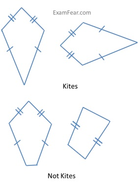
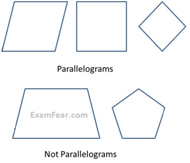
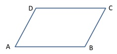
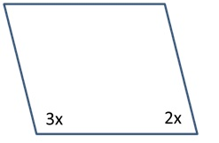

Kinds of Quadrilaterals
Quadrilaterals are classified based on the nature of their sides and angles.



AB, CD and BC, AD are pairs of opposite sides.
∠A, ∠C and ∠B, ∠D are pairs of opposite angles.
AB-BC, BC-CD, CD-DA and DA-AB are adjacent sides.
∠A-∠B,∠B-∠C, ∠C-∠D and ∠D-∠A are adjacentangles.
Problem: Draw a rough figure of a quadrilateral that is not a parallelogram but has exactly two opposite angles of equal measures

ABCD is a quadrilateral in which angles
∠A =∠C = 110°
Therefore, it could be a kite.
Problem: The measures of two adjacent angles of a parallelogram are in the ratio 3:2. Find the measure of each of the angles of the parallelogram.
Solution:

Let two adjacent angles be 3x and 2x.
Since the adjacent angles in a parallelogram are supplementary,
3x + 2x = 180°
5x = 180°
x = 36°
Therefore, first angle = 3x = 3 * 36° = 108°
Second Angle = 2x = 2 * 36° = 72°
Problem: Two adjacent angles of a parallelogram have equal measure. Find the measure of the angles of the parallelogram.
Solution: Let each adjacent angle be x.
Since the adjacent angles in a parallelogram are supplementary,
x + x = 180°
x = 90°
Hence, each adjacent angle is 90°
Now, the other angles would be also 90°.